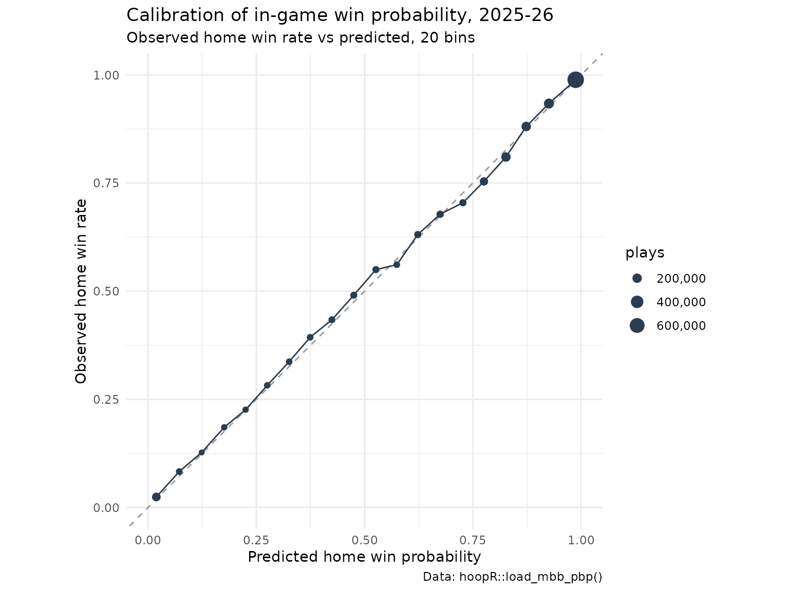
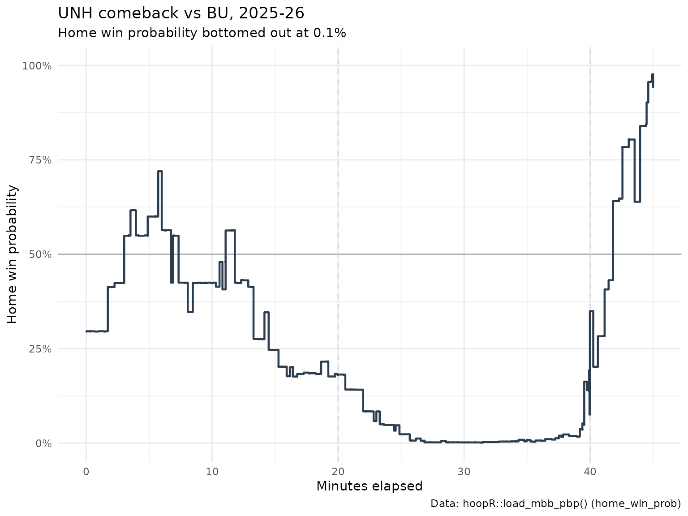

College Basketball Win Probability Model: In-Game Win Probability in hoopR Play-by-Play
Saiem Gilani
Source:vignettes/articles/college-basketball-win-probability-model.Rmd
college-basketball-win-probability-model.RmdWin probability (WP) is the chance the home team wins, given
everything that has happened so far. Every play in
load_mbb_pbp() carries two model columns:
pregame_home_prob, the home team’s chance before tip-off,
and home_win_prob, the in-game estimate after that play.
Together they turn a play-by-play log into a story: when a game was
decided, how unlikely a comeback was, which plays mattered most. This
article explains how the columns are produced, measures how well
calibrated they are on a full season, and draws a win probability
chart.
The official model card is wp_enrich.md
in the hoopR-mbb-data repository. Numbers below are
computed in this article from the published play-by-play unless labeled
“as reported in the model card”.
How is win probability estimated?
As described in the model card:
- Model. A gradient-boosted classifier (XGBoost) over the game state: score margin, seconds remaining and its square root, the pregame logit (the pregame probability on the log-odds scale) and possession. It was fit on the 2023 season.
-
Pregame prior.
pregame_home_probcomes from an as-of team-rating model over the season’s own results, so it reflects each team’s strength going into the game. - Applied in place. The model is applied to every published season of ESPN men’s college basketball play-by-play, adding the two columns with every original column preserved. There is no separate WP file to fall out of sync with the plays, and the publish step refuses a play-by-play file without finite WP columns.
Because the inputs are game state only, the model treats “down 6 with 4:00 left” the same way in every season. Whether that transfers across rule eras (the shot clock was 35 seconds before 2015-16, and the three-point line moved) is tested below.
Loading one season
library(hoopR)
library(dplyr)
library(ggplot2)
season <- 2026
pbp <- load_mbb_pbp(seasons = season) |>
select(game_id, period_number, start_period_seconds_remaining, home_score, away_score,
home_team_abbrev, away_team_abbrev, home_win_prob, pregame_home_prob)
# realized outcome for each game, from the team box scores
outcomes <- load_mbb_team_box(seasons = season) |>
filter(team_home_away == "home", team_score != opponent_team_score) |>
transmute(game_id, home_win = as.numeric(team_score > opponent_team_score))
wp <- pbp |>
filter(!is.na(home_win_prob)) |>
inner_join(outcomes, by = "game_id")
tibble(
plays = nrow(pbp),
share_with_wp = round(mean(!is.na(pbp$home_win_prob)), 4),
evaluated_plays = nrow(wp),
games = n_distinct(wp$game_id),
home_win_rate = round(mean(outcomes$home_win[outcomes$game_id %in% wp$game_id]), 3),
mean_home_win_prob = round(mean(wp$home_win_prob), 3)
)
#> # A tibble: 1 × 6
#> plays share_with_wp evaluated_plays games home_win_rate mean_home_win_prob
#> <int> <dbl> <int> <int> <dbl> <dbl>
#> 1 2915731 1 2915210 6274 0.667 0.668The mean predicted probability close to the realized home-win rate is the first, coarsest calibration check. College home-court advantage is large, and both numbers show it.
How well calibrated is it?
The Brier score is the mean squared difference between a probability and the 0/1 outcome; lower is better. A useful baseline predicts the season’s home-win rate on every play. Calibration error compares predicted and observed win rates within bins of predicted probability; here we use 20 bins and weight each bin by its plays.
brier <- function(p, y) mean((p - y)^2)
base_rate <- mean(wp$home_win)
bins <- wp |>
mutate(bin = cut(home_win_prob, breaks = seq(0, 1, by = 0.05), include.lowest = TRUE)) |>
group_by(bin) |>
summarise(plays = n(), predicted = mean(home_win_prob), observed = mean(home_win))
pregame <- wp |> distinct(game_id, pregame_home_prob, home_win)
metrics <- tibble(
brier_in_game = brier(wp$home_win_prob, wp$home_win),
brier_baseline = brier(base_rate, wp$home_win),
calibration_mae_20bin = weighted.mean(abs(bins$predicted - bins$observed), bins$plays),
brier_pregame = brier(pregame$pregame_home_prob, pregame$home_win)
) |>
mutate(skill_vs_baseline = 1 - brier_in_game / brier_baseline)
metrics |> mutate(across(everything(), \(x) round(x, 4))) |> as.data.frame()
#> brier_in_game brier_baseline calibration_mae_20bin brier_pregame
#> 1 0.1212 0.221 0.0089 0.1872
#> skill_vs_baseline
#> 1 0.4517
ggplot(bins, aes(predicted, observed)) +
geom_abline(colour = "grey60", linetype = "dashed") +
geom_line(colour = "#2C3D50") +
geom_point(aes(size = plays), colour = "#2C3D50") +
scale_size_area(max_size = 5, labels = scales::comma) +
coord_equal(xlim = c(0, 1), ylim = c(0, 1)) +
labs(
title = "Calibration of in-game win probability, 2025-26",
subtitle = "Observed home win rate vs predicted, 20 bins",
x = "Predicted home win probability", y = "Observed home win rate",
caption = "Data: hoopR::load_mbb_pbp()"
) +
theme_minimal()
Does it get sharper as the game goes on?
A healthy WP model becomes more certain, and so more accurate, as time runs out:
wp |>
group_by(period_number) |>
summarise(plays = n(), brier = round(brier(home_win_prob, home_win), 4))
#> # A tibble: 5 × 3
#> period_number plays brier
#> <int> <int> <dbl>
#> 1 1 1394943 0.154
#> 2 2 1496074 0.0901
#> 3 3 20509 0.148
#> 4 4 3119 0.136
#> 5 5 565 0.157Period 3 and beyond are overtimes, which start from a tie and are inherently uncertain.
Does it transfer to an older era?
The model was fit on 2023. Applying it to 2012, under the 35-second shot clock and the old three-point line, tests whether game state meant the same thing then:
old <- load_mbb_pbp(seasons = 2012) |>
select(game_id, home_win_prob, pregame_home_prob)
old_outcomes <- load_mbb_team_box(seasons = 2012) |>
filter(team_home_away == "home", team_score != opponent_team_score) |>
transmute(game_id, home_win = as.numeric(team_score > opponent_team_score))
old_wp <- old |>
filter(!is.na(home_win_prob)) |>
inner_join(old_outcomes, by = "game_id")
if (nrow(old_wp) > 0) {
old_bins <- old_wp |>
mutate(bin = cut(home_win_prob, breaks = seq(0, 1, by = 0.05), include.lowest = TRUE)) |>
group_by(bin) |>
summarise(plays = n(), predicted = mean(home_win_prob), observed = mean(home_win))
bind_rows(
metrics |> transmute(era = "2026 (in era)", plays = nrow(wp), brier = brier_in_game,
skill_vs_baseline, calibration_mae_20bin),
tibble(
era = "2012 (35-second shot clock)", plays = nrow(old_wp),
brier = brier(old_wp$home_win_prob, old_wp$home_win),
skill_vs_baseline = 1 - brier / brier(mean(old_wp$home_win), old_wp$home_win),
calibration_mae_20bin = weighted.mean(abs(old_bins$predicted - old_bins$observed), old_bins$plays)
)
) |>
mutate(across(where(is.double), \(x) round(x, 4))) |>
as.data.frame()
} else {
message("The 2012 asset does not carry the WP columns.")
}
#> era plays brier skill_vs_baseline
#> 1 2026 (in era) 2915210 0.1212 0.4517
#> 2 2012 (35-second shot clock) 1118161 0.1259 0.4151
#> calibration_mae_20bin
#> 1 0.0089
#> 2 0.0237As reported in the model card (computed on its own render), 2012 scored a Brier of 0.1242 with 42.3% skill over the baseline and a 20-bin calibration error of 0.0255, against 0.1212, 45.1% and 0.0106 in 2026: a real but small era-transfer cost.
Drawing a win probability chart
Pick the game whose home win probability fell lowest before the home team came back to win:
comeback <- wp |>
filter(home_win == 1) |>
group_by(game_id, home_team_abbrev, away_team_abbrev) |>
summarise(min_wp = min(home_win_prob), .groups = "drop") |>
arrange(min_wp) |>
slice_head(n = 1)
comeback
#> # A tibble: 1 × 4
#> game_id home_team_abbrev away_team_abbrev min_wp
#> <int> <chr> <chr> <dbl>
#> 1 401824361 UNH BU 0.00126
# elapsed time from the period clock: two 20-minute halves, then 5-minute overtimes
game <- wp |>
filter(game_id == comeback$game_id) |>
mutate(elapsed_min = if_else(
period_number <= 2,
(period_number - 1) * 20 + (1200 - start_period_seconds_remaining) / 60,
40 + (period_number - 3) * 5 + (300 - start_period_seconds_remaining) / 60
))
ggplot(game, aes(elapsed_min, home_win_prob)) +
geom_hline(yintercept = 0.5, colour = "grey70") +
geom_vline(xintercept = c(20, 40), colour = "grey85", linetype = "dashed") +
geom_step(colour = "#2C3D50", linewidth = 0.8) +
scale_y_continuous(labels = scales::percent, limits = c(0, 1)) +
labs(
title = sprintf("%s comeback vs %s, 2025-26", comeback$home_team_abbrev, comeback$away_team_abbrev),
subtitle = sprintf("Home win probability bottomed out at %.1f%%", 100 * comeback$min_wp),
x = "Minutes elapsed", y = "Home win probability",
caption = "Data: hoopR::load_mbb_pbp() (home_win_prob)"
) +
theme_minimal()
The change in home_win_prob from one play to the next is
win probability added (WPA), a natural way to rank the
most important plays of a game:
mutate(wpa = home_win_prob - lag(home_win_prob)) within a
game.
Limitations
- Game state only. Foul counts, bonus situations and timeouts remaining are not inputs, so late-game estimates in fouling situations are rougher.
- One training season. The model was fit on 2023; the holdout above bounds the era-transfer error rather than assuming it away.
- The pregame prior moves. It is an as-of team-rating model, so early-season priors rest on few games.
- Calibration is not causation. A well-calibrated WP says how often teams in a state win, not what a coach should do in it.
-
Coverage. The model card recorded a period when
seasons 2003-2023 temporarily lacked the WP columns after a republish;
check
mean(!is.na(pbp$home_win_prob))on the seasons you load.
Where to go next
- College basketball team ratings model, opponent-adjusted team strength.
- ESPN endpoints for live single-game play-by-play.
- Men’s college basketball cookbook and Getting Started with hoopR.
- The other model write-ups: college RAPM, college player value and NBA player impact.
- Reference:
load_mbb_pbp()in the hoopR Data section.